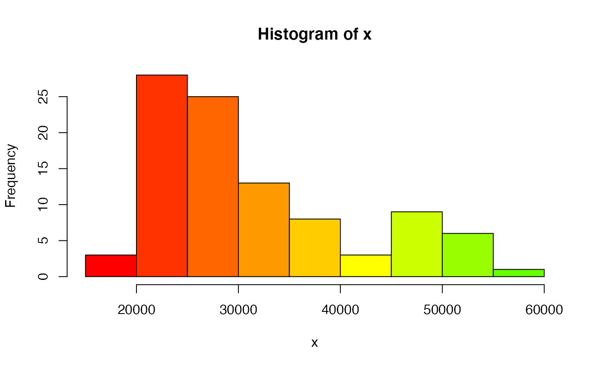

lotto_demographics.Rmd
library(lottodata)The get access to this data set, simply, install the lottodata package via GitHub and type lotto_demograpics into R.
lotto demographics
The variables included in the data set:
| Variable | Description | Type of variable |
|---|---|---|
zip_code |
The first 3 digits of postal code (geographical region) | string |
geo_id |
Geography ID | integer |
income |
Per capita income levels | integer |
education |
Highest completed level of education for the population | float |
mbsa |
Proportion of time spent in white collar employment. White collar employment is defined as the proportion of residents aged 15 or greater employed in management, business finance and administration, health, education, law, social community and government services, art, culture, natural and applied sciences and related occupations, according to the National Occupational Classification |
float |
ses |
SES was calculated via takling the sum of the Z-scores of it’s per-capita income, years of education, and proportion of white-collar workers |
float |
description |
Describes where the location is in natural language | string |
# EDA via base R
demographics_eda <- function(x){
hist(x, col = rainbow(30))
plot(x)
plot(density(x))
data.frame(min = min(x),
median = median(x),
mean = mean(x),
max = max(x),
sd = sd(x),
range =max(x) - min(x) )
}
demographics_eda(lotto_demographics$income)
#> min median mean max sd range
#> 1 18753 27690 31481.41 55569 10021.89 36816